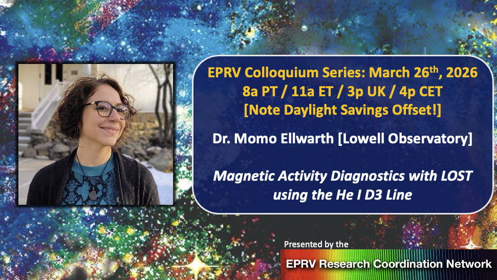

About this Website
Welcome to the home of the Extreme Precision Radial Velocity Research Coordination Network (EPRV RCN)! This website is meant to serve as a landing page for the EPRV community where members can come to access or contribute resources such as presentation recordings, software tools / tutorials, graphics & animations, and useful literature references. We're in the early days of development and expect new areas to be created and populated by the community over the coming months.
If there are areas of the website that you're interested in contributing to, we encourage you to engage via the Gitflow workflow outlined on the Website Development page! If you have questions, or resources you'd like to contribute without tackling the github lifestyle, you can reach out to our website oversight team at: eprv.rcn-website [at] jpl.nasa.gov
Not sure where to start? Consider:
- Adding yourself to the public facing RCN Directory so that community members can identify potential new collaborators.
- Adding to the Tutorials page where we're aiming to compile useful examples of code for all areas of EPRV science from data downloads, data reduction, stellar variability analyses, planet fitting, etc.
- Suggesting papers on the EPRV ADS Libraries page.
- Adding figures or animations that you've developed to the Visual Resources page.
- Developing new sections/pages that fit within the EPRV Resources or Professional Development umbrellas (e.g., outlines of how to write compelling EPRV observing proposals or compiling lists of funding opportunities that cover EPRV science or instrumentation).
- Nominating yourself or a collaborator to give an RCN Colloquium.
- Suggesting a topic for a future RCN Workshop.
EPRV RCN Announcements
EPRV RCN Colloquium Series
The next EPRV RCN Colloquium will take place at 8am Pacific on January 29th, 2026 and feature Sharon Wang from Tshingua University. For connection info please refer to the EPRV RCN Google Calendar and/or email updates, available to RCN members.
Abstract: CHORUS (Canary Hybrid Optical high-Resolution Ultra-stable Spectrograph) is a next-generation extreme precision radial velocity instrument for the 10-meter Gran Telescopio Canarias, designed to reach 10 cm/s precision. CHORUS features a dual-arm design with a UV arm (310-420 nm, R~25,000) and a visual arm (420-780 nm, R~120,000). The expected science programs include PRV surveys of nearby stars, follow-up of transit discoveries, characterization of exoplanet atmospheres, finding stars with primordial composition, and galactic archaeology. I will introduce the CHORUS project and the ongoing precursor science programs focusing on refining target selection and mitigating stellar activity to improve detection sensitivity, and we invite the community to join these efforts in preparation for the science operation starting in 2028.
RCN Overview
The EPRV Research Coordination Network (RCN), sponsored by NASA's Exoplanet Exploration Program, aims to support increased communication and collaboration within the radial velocity community as we work towards the goal of obtaining robust mass measurements for Earth analog planets.
Membership is open to the community and we invite participants from all corners of the RV community and related fields, including but not limited to: observational efforts, instrumentation, data analysis techniques, solar studies, and stellar variability mitigation.
Sign up for the RCN using this Google form. Membership provides access to the RCN mailing list, Google Calendar, Slack workspace, and Google Drive.
Note: All members of the EPRV RCN will be required to follow our Code of Conduct.